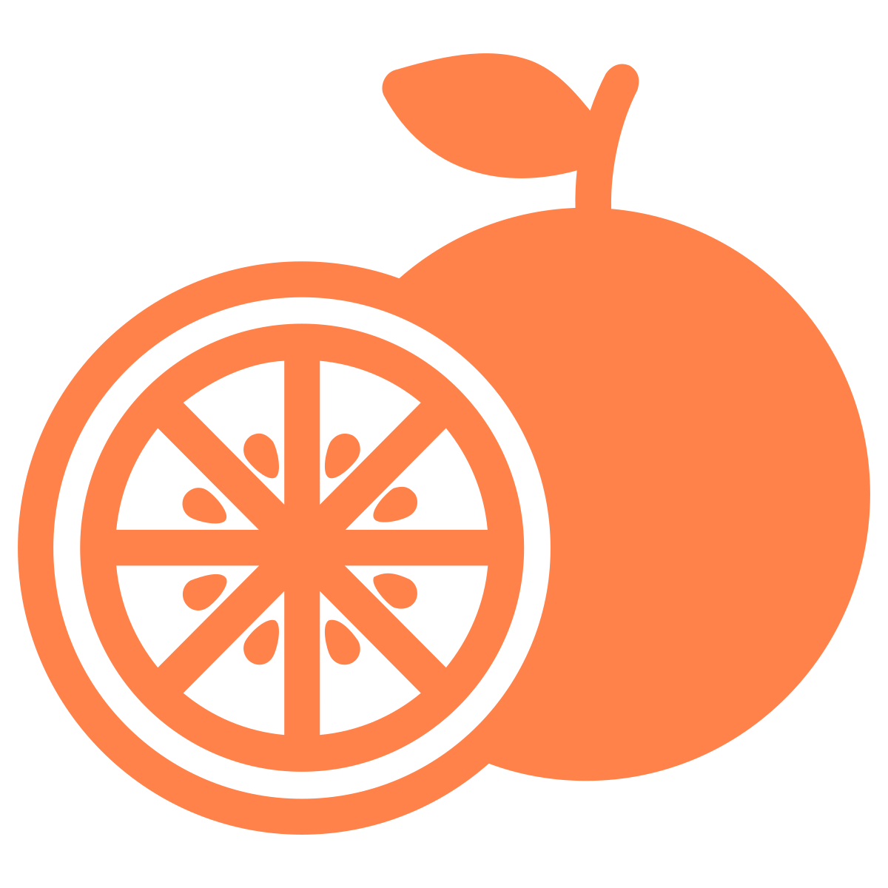
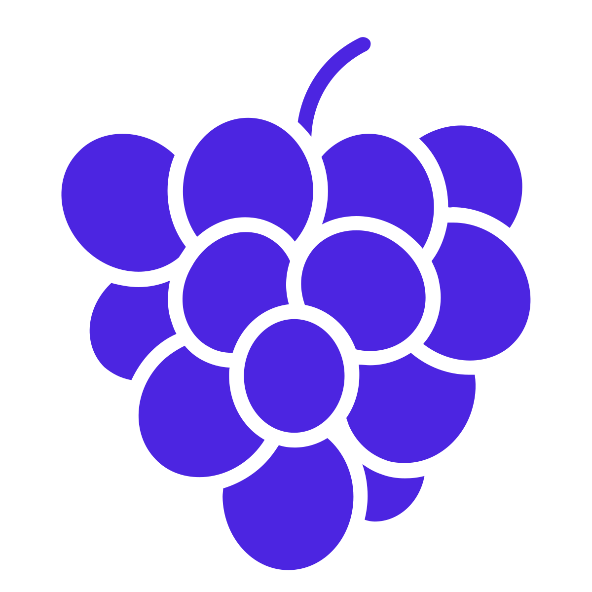
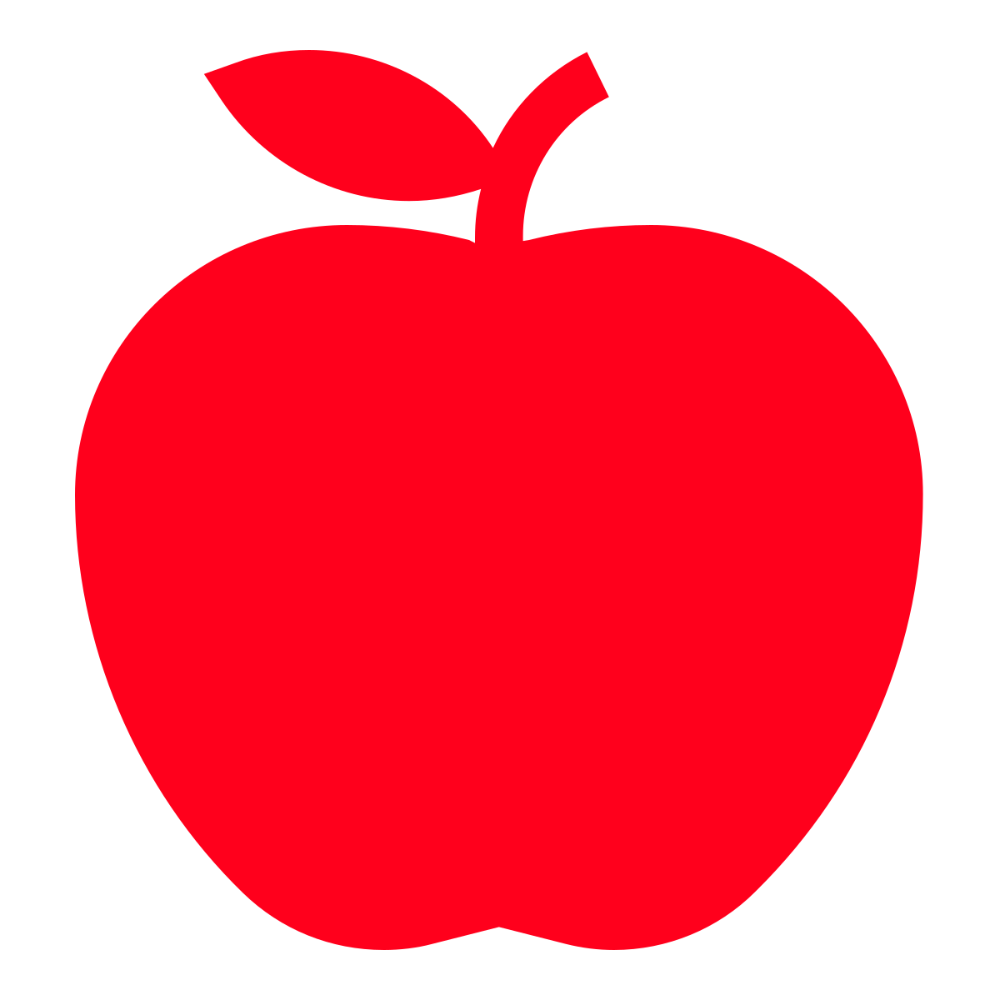
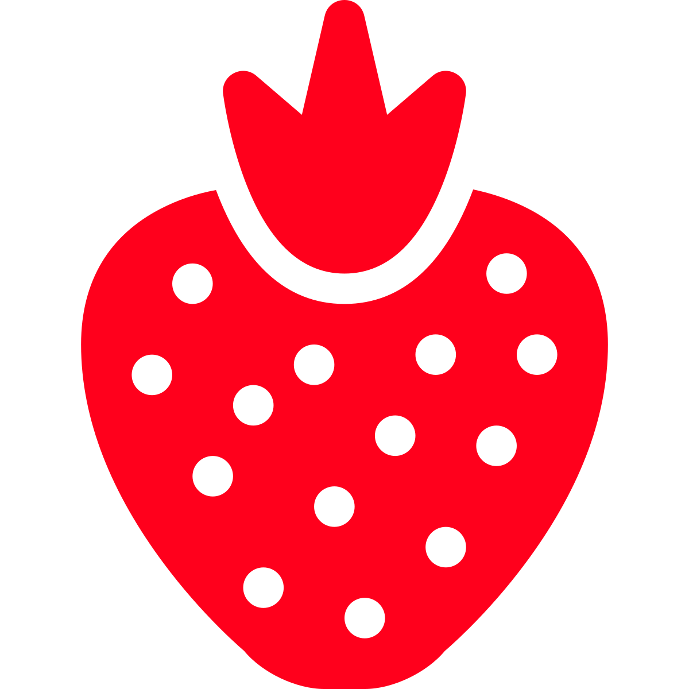
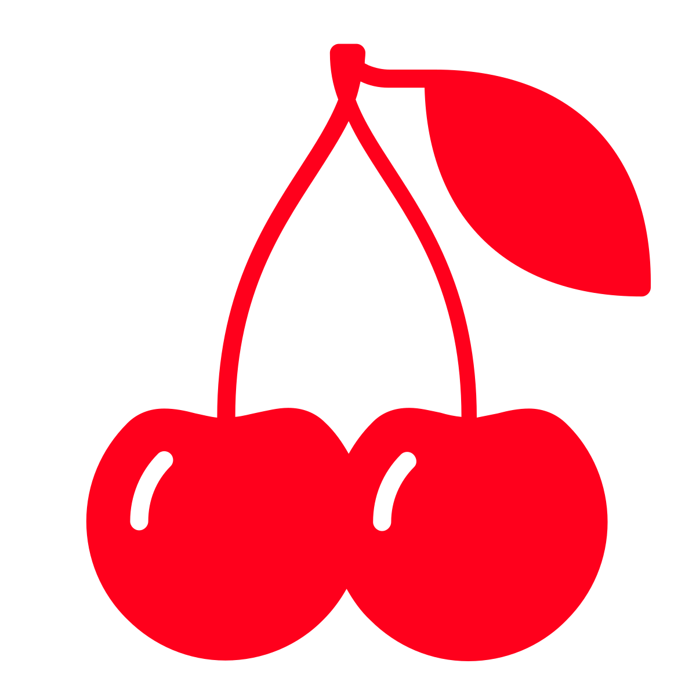
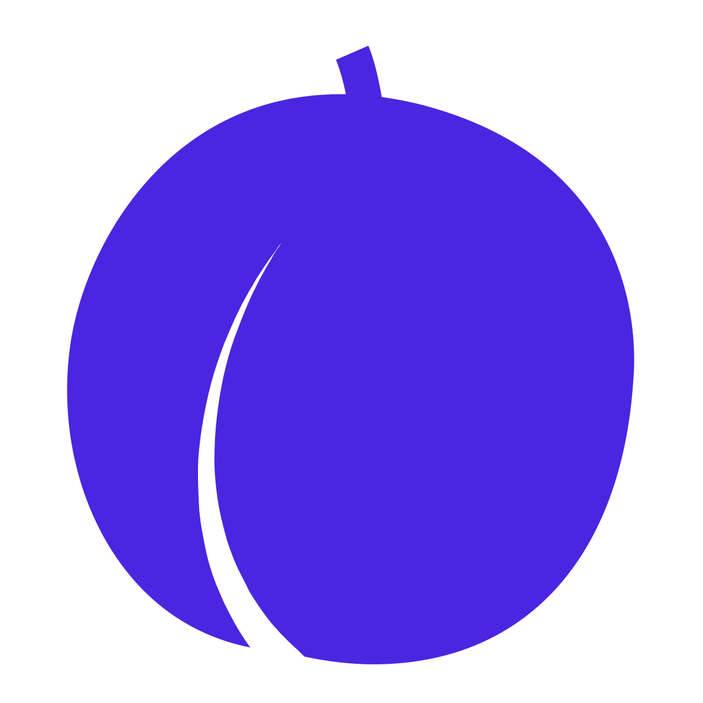

We've found the Voracious Bookwyrm. It seems to be eating everything, but it's looking for something in particular. Maybe if we retrace its path using these five other books that have appeared we can figure out how to calm it?
| END |  |  |  | ||||||||||
|  |  | ||||||||||||
|  | |||||||||||||
| START |
| END | O | O | G | B | * | * | O | O | O | * | A | A | * |
| O | * | B | P | O | * | * | S | O | S | C | C | * | O |
| O | M | C | * | O | * | P | P | G | B | A | P | * | S |
| C | M | A | S | B | P | C | A | S | A | G | C | B | S |
| * | B | P | P | M | S | B | O | O | G | B | C | * | * |
| G | * | * | * | P | B | G | B | S | P | G | P | * | B |
| O | C | B | O | G | G | * | G | S | P | S | G | * | S |
| B | O | * | P | * | * | G | A | G | B | O | * | M | S |
| A | A | B | C | P | * | A | O | B | * | * | * | P | * |
| S | S | G | M | M | G | C | * | O | M | M | * | M | * |
| M | * | S | P | B | S | G | S | C | C | * | B | * | A |
| S | O | G | B | O | * | O | P | C | P | B | A | * | S |
| * | * | S | O | B | S | S | * | G | S | G | O | O | S |
| C | M | * | M | O | S | C | P | C | S | M | P | M | A |
| * | C | * | M | B | G | A | O | C | S | M | S | * | G |
| A | A | B | G | A | O | * | * | * | * | A | S | M | S |
| A | * | C | C | * | G | C | C | C | * | P | P | * | S |
| * | * | G | G | * | * | P | A | B | M | * | P | C | C |
| G | P | O | P | P | P | S | G | O | M | P | P | G | * |
| * | * | P | M | * | A | A | START | P | S | P | * | G | O |
| Letter | Icon |
|---|---|
| A | Apple |
| B | Banana |
| C | Cherry |
| G | Grape |
| M | Plum |
| O | Orange |
| P | Pear |
| S | Strawberry |
| * | Resting Spot |
In this electronic zoo, the animals are inside the computer.
The lamb and the butterfly are cryptic and cross.
| Painting and sculpture for two topless tarts (4) | Part of jaw that's about 1.66 feet (5) |
| Loudly cry, ""Lucille!"" (4) | Pieces of a totally boss '70s motorcycle cop show (5) |
| California will give a hoot, perhaps (4) | Makes 100 simple flotation devices (6) |
| Vehicle to deteriorate, becoming a vegetable (6) | Dirk, Penny, and Mick, but not Juliett (6) |
| Conceal and reassemble a lock (5) | Yes, in Russia no unstuffed cabbage is formal (5) |
| Sort of a failing swimmer? (4) | Enid flipped over feast (4) |
| Drug-addled greeting will be heard (4) | Three of the Germans reportedly like some martinis (3) |
| Make out a thousand and one empty ships (4) | Employing telepathy, Ronald starts to send feedback (8) |
| Boy, start to guess a number (4) | Pierce Justin's innards? That's disgusting (5) |
| Something to drink with beef, by the sound of it (4) | Section of intelligence report (4) |
These players are the best at this despite being brand new. The best was in 1983.
well, at least they left a note. (your answer will have five letters)
| i have eaten | i have eaten | i have eaten | i have eaten | i have eaten | i have eaten | i have eaten | i have eaten | i have eaten | i have eaten | i have eaten | i have eaten | i have eaten |
| the poem | the vehicles | the eurasian river | the power | the fuel | the pasta | the oven | the scraps | the author | the blush | the spreadsheet | the turner | the singer |
| that was in | that were in | that was in | that was in | that was in | that was in | that was in | that were in | that was in | that was in | that was in | that was in | that was in |
| your answer | your answer | your answer | your answer | your answer | your answer | your answer | your answer | your answer | your answer | your answer | your answer | your answer |
| and which | and which | and which | and which | and which | and which | and which | and which | and which | and which | and which | and which | and who |
| you were probably | you were probably | you were probably | you were probably | you were probably | you were probably | you were probably | you were probably | you were probably | you were probably | you were probably | you were probably | you were probably |
| writing | saving | trying to use | using | retrieving | saving | using | pairing | throwing | treating | organizing | considering | wrapping |
| for a slam | for driving around town | as crossword fill | to rule | from a bog | for date night | for cooking dinner | with pieces | in the inferno | with Visine | your data with | simply the best | around your finger |
| forgive me | forgive me | forgive me | forgive me | forgive me | forgive me | forgive me | forgive me | forgive me | forgive me | forgive me | forgive me | forgive me |
| it was SEVEN | they were SIX | it was SIX | it was SEVEN | it was SIX | it was EIGHT | it was SEVEN | it was SIX | it was SEVEN | it was NINE | it was SEVEN | it was SIX | it was SEVEN |
| so varied | so holy | so synapse-related | so alien | so parroted | so lovey-dovey | so eccentric | so round | so unrushed | so exhausted | so quoteworthy | so tarnished | so analyzing |
| and so sundry | and so Anglican | and so nervy | and so distant | and so recurrent | and so amorous | and so bizarre | and so planetary | and so steady in tempo | and so ready to retire | and so worthy of reference | and so green | and so inspecting |
My favorite color matches me to a T.
| 1/20 | |
| 2/20 | |
| 3/20 | |
| 4/20 | |
| 5/20 | |
| 6/20 | |
| 7/20 | |
| 8/20 | |
| 9/20 | |
| 10/20 | |
| 11/20 | |
| 12/20 | |
| 13/20 | |
| 14/20 | |
| 15/20 | |
| 16/20 | |
| 17/20 | |
| 18/20 | |
| 19/20 | |
| 20/20 |
{kind=link}